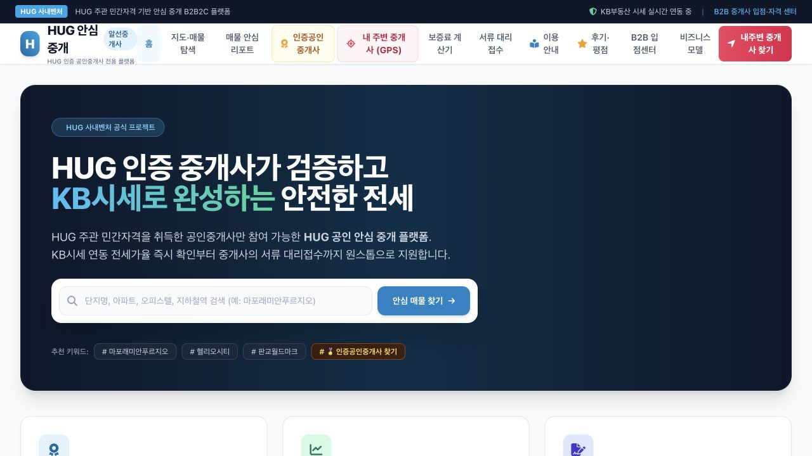

수영구청 보도자료 · 연합뉴스 게재
수영구 창업특강
수영구청 보도자료는 창업마케팅 전문 오예림 강사가 예비·초기 창업자 17명을 대상으로 특강을 진행했다고 소개합니다. 교육 주제는 마케팅, 브랜드 홍보 스토리텔링과 공모사업계획서 작성입니다.
기관이 제공한 보도자료를 연합뉴스에서 원문 게재한 자료입니다.
수영구청 보도자료 원문 보기 ↗창업자·지역사업자·기업·공공기관의 실제 주제를 바탕으로 교육 시간 안에 완성하고 직접 확인한 결과물을 기록합니다.
기관명만 나열하지 않고 대상·도구·실행 과정·확인된 결과를 함께 공개합니다.
ChatGPT와 영상 AI로 고객용 홍보문구, 광고영상·자막영상·SNS 콘텐츠를 제작했습니다.
고객·문제·해결방안을 구조화하고 사업계획서 항목별 초안과 실행 방향을 정리했습니다.

사이트 제작, 배포용 폴더 생성, Netlify Drop, Public 링크 확인까지 하나의 실습 흐름으로 완성했습니다.
BCC 오예림 강사가 참여한 교육과 관련된 외부 보도와 기관 발표를 원문으로 확인할 수 있습니다.
수영구청 보도자료 · 연합뉴스 게재
수영구청 보도자료는 창업마케팅 전문 오예림 강사가 예비·초기 창업자 17명을 대상으로 특강을 진행했다고 소개합니다. 교육 주제는 마케팅, 브랜드 홍보 스토리텔링과 공모사업계획서 작성입니다.
기관이 제공한 보도자료를 연합뉴스에서 원문 게재한 자료입니다.
수영구청 보도자료 원문 보기 ↗비플러스 · 교육과정 보도
오예림 강사가 참여한 창업교육 과정의 관련 보도입니다. 비플러스는 서구여성새로일하기센터가 창업 희망 여성 20명을 대상으로 AI 콘텐츠 제작·온라인 홍보 등을 교육하고 수료식을 개최했다고 전했습니다.
기사에는 강사명이 표기되어 있지 않습니다.
비플러스 기사 원문 보기 ↗